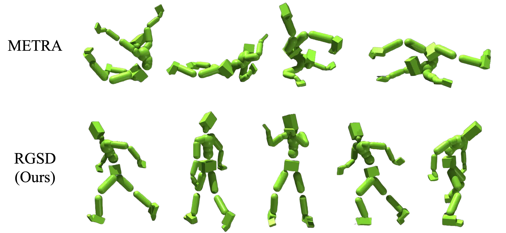
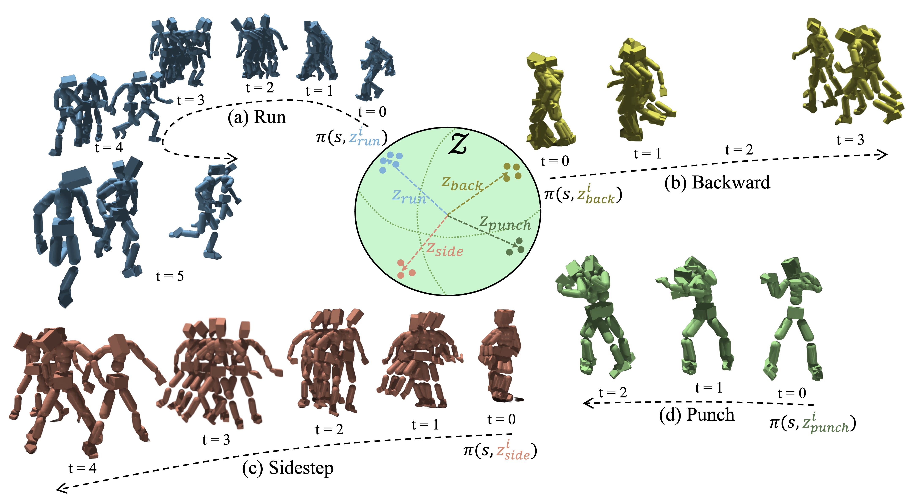

Reference Grounded Skill Discovery ICLR 2026
Motivation
Existing unsupervised skill discovery methods struggle to scale to high-DoF agents. Moreover, the learned skills are often unstructured and therefore lack semantic meaning. We propose Reference-Grounded Skill Discovery (RGSD), which leverages a reference motion dataset to ground the online skill discovery process onto a semantically meaningful manifold. Through this reference grounding, RGSD learns diverse variations for a 69-DoF humanoid character around existing motions. For example, given a single backward-walking motion, RGSD can discover diverse turning behaviors while walking backward, leading to improved downstream task performance.
How it works
- Using contrastive learning, we train an encoder q(𝑧|s) to map each motion to a directional vector on the unit hypersphere.
- We then use the pre-trained encoder as a discriminator within DIAYN.
- When the policy conditioned on a specific motion embedding 𝑧, the DIAYN reward acts as an imitation reward.
- When the policy conditioned on a different 𝑧, the DIAYN reward encourages the discovery of novel yet relevant behaviors.
Video
1) Learned skills from RGSD
RGSD can control the degree of diversity at test time by varying the sampling distribution of the latent variable 𝑧.
2) When trained with unsegmented reference motions
RGSD is applicable to unsegmented reference motions
(a single motion containing multiple skills)
3) Unconstrained motion generation
Latent vectors are sampled uniformly from the unit hypersphere.
4) Downstream task evaluation with learned skills
Citation
Acknowledgements
Thanks to Jeonghwan Kim for discussion.